How to generate fur and fur mask
How to generate fur and fur mask
This tutorial will serve as a general guide for how you can make fur and build the fur mask for Animaze.
It will contain a general guide for how you can generate the fur using Xgen (Autodesk), but take into consideration that you can obtain similar results using a program you are familiar with.
I will try to keep the tutorial as simple as possible to exemplify the process in Xgen, if you need a more detailed tutorial check the link below:
https://www.youtube.com/watch?v=hvNcRaPmWoE&t=1352s
-
Using a sphere with UVs in 01 I will start to generate the hair:
Go to X gen => create a new description
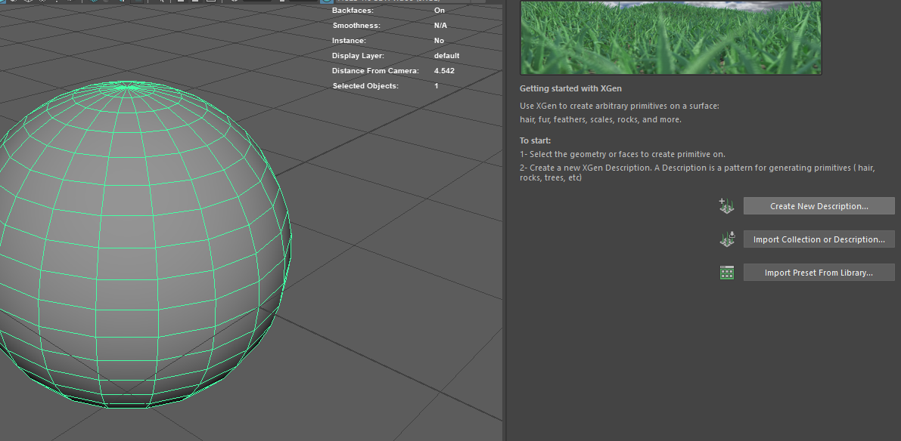
-
In the “Control the primitives by:” section choose “Placing and shaping guides”
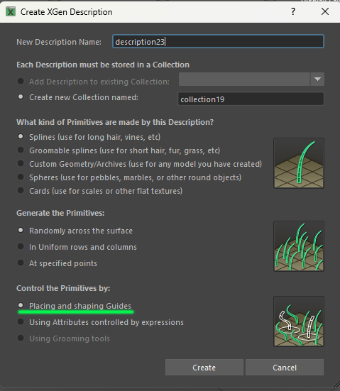
-
Start placing guides.
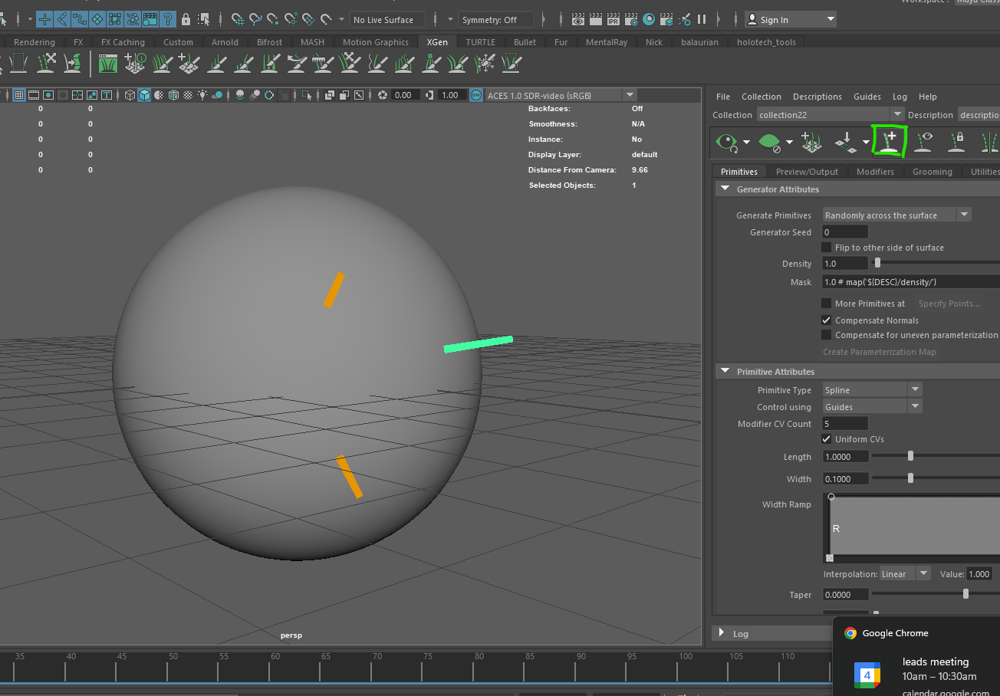
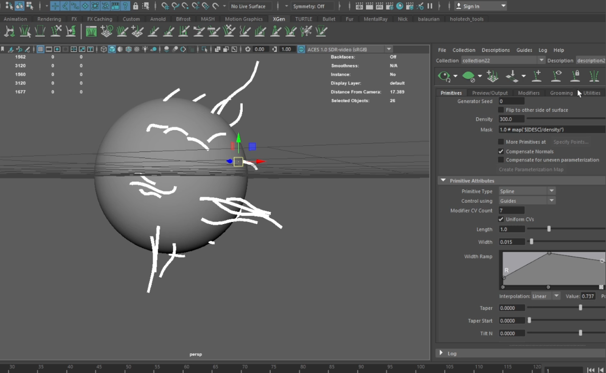
-
Play with them to define the general shape of the hair, after you are happy with the result, select all the guides and mirror them.
-
Play even more with the guides to create asymmetry.
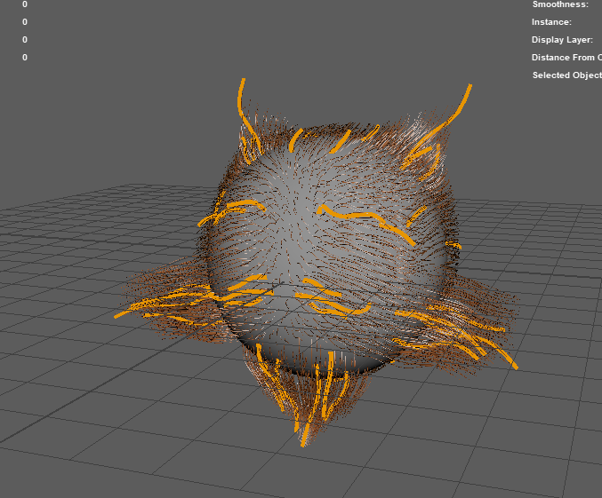
-
You might need to increase the CV count in order to follow the shape of the guides.
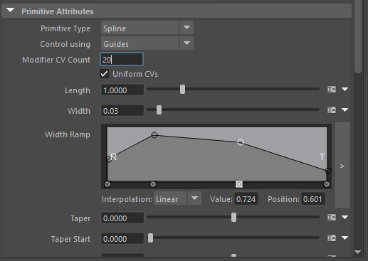
-
Start and add the modifiers. I will list the most commonly used modifiers.
-
The most frequently encountered are clumps
-
With it, you can compose tufts of fur
-
Noice
-
Cut
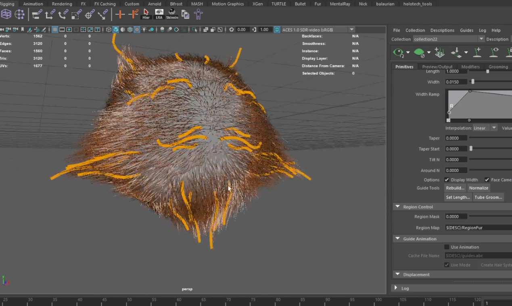
-
Now is time to generate the 3D geometry
Preview/output => OutputSetting =>Operation => create Geometry
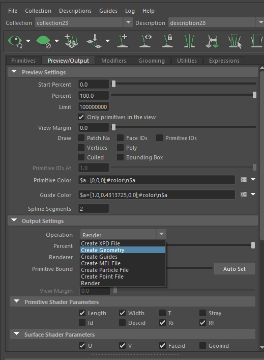
-
The 3D fur will be scanned to generate the ambient occlusion map and the normal map.
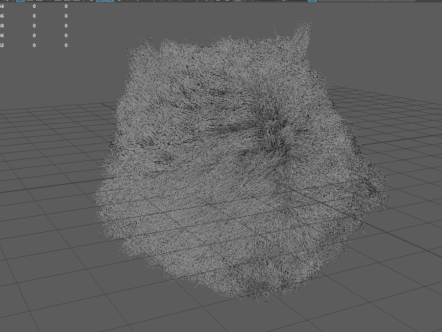
9.1. If the exported fur has too many polygons you can split it into multiple fur groups and bake them separately.
9.2. I split the mesh into 2 pieces and the final result looks like this (see the image below)
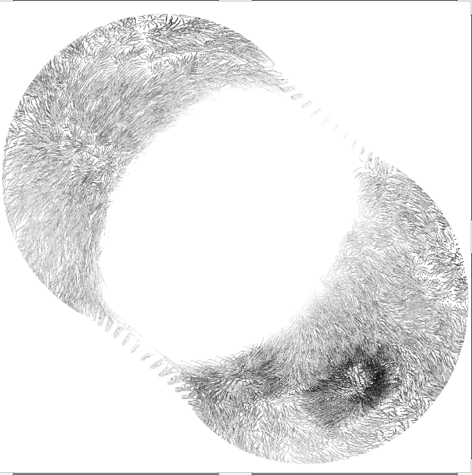 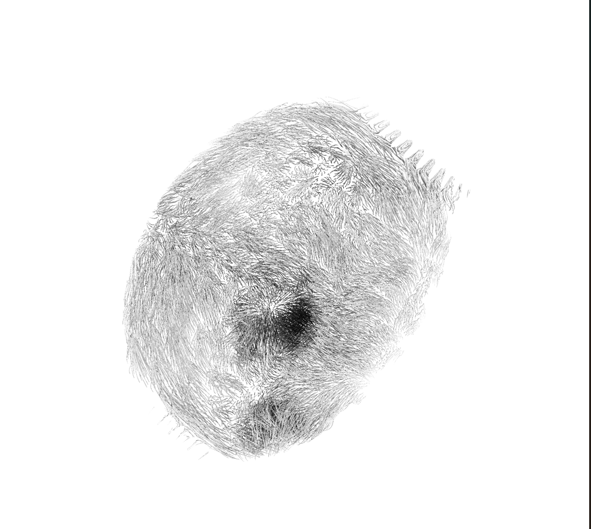
9.3. Regarding the ambient occlusion overlap the images using multiply function in Photoshop.
9.4. For the normal map use the Overlay function in Photoshop.
After this process, the textures should look like this.
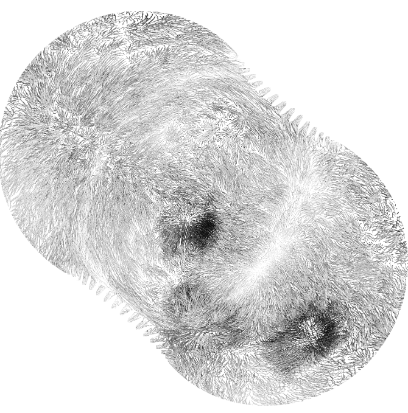 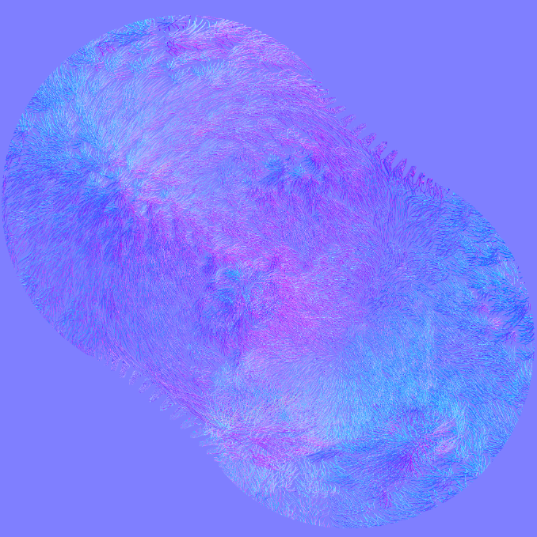
-
Using the ambient occlusion map, build the fur mask.
10.1. Red channel controls the mix between normal specular and aniso specular:
-
0 is normal
-
255 is specular
10.2. Green channel is an additional layer alpha control. Alpha is the length, all lower value pixels are discarded, everything above will render at a calculated opacity, the green channel adds an additional transparency control.
10.3. Blue channel is the fur aniso specular intensity
10.4. Alpha channel is used as fur length, controlling a smoother blend between (here we insert the ambient occlusion texture):
-
fur areas (values closer to 255)
-
and furless areas (values closer to 0)
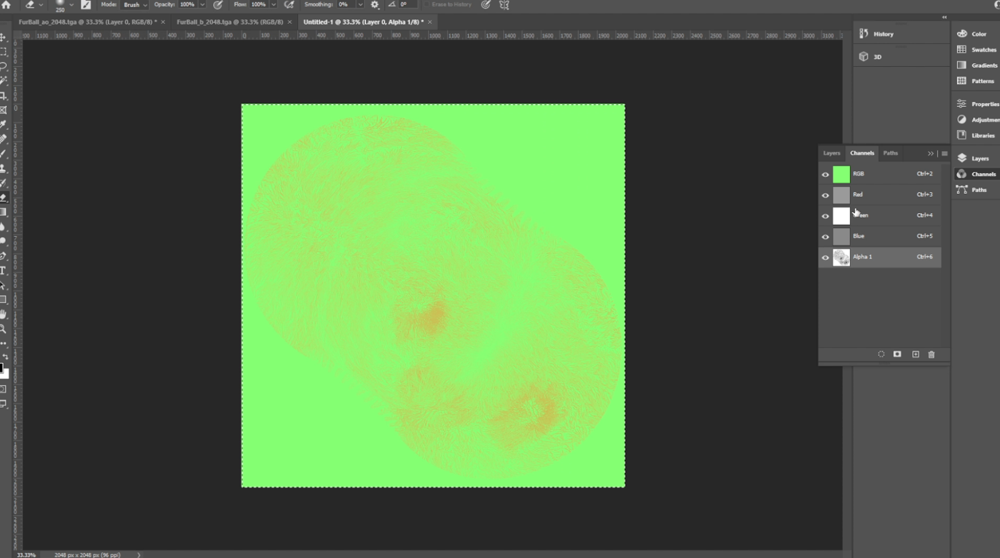